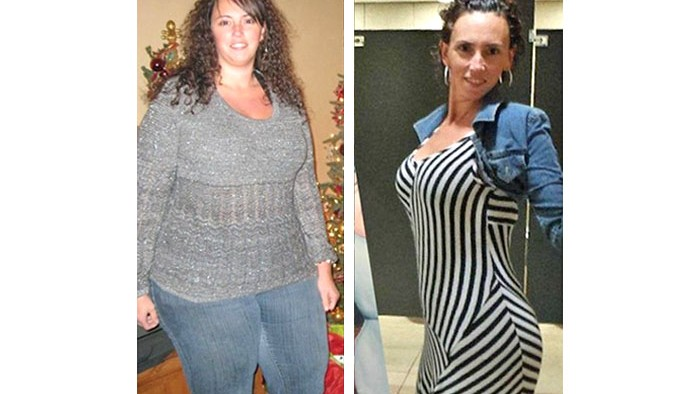

ကိုယ်အလေးချိန် 145 ပေါင် လျော့ချနိုင်ခဲ့သော ကလေးသုံးယောက်မိခင်

နောက်ဆုံးတော့ ကျွန်မဘ၀ပြောင်းလဲခဲ့ပါပြီ...
ကျွန်မနာမည်က Torrie Creamer ပါ။ အရပ် 5 ပေ 11 လက်မမြင့်ပြီး ကိုယ်အလေးချိန် 322 ပေါင်ရှိတဲ့ အ၀လွန်သူတစ်ယောက်ဖြစ်ခဲ့ဖူးပါတယ်။ အိမ်ထောင်မပြုမီ 10 နှစ်တာကာလကတည်းက ကိုယ်အလေးချိန်က တဖြည်းဖြည်းတိုးနေတာဖြစ်ပြီး ကလေးသုံးယောက်မွေးပြီး ချိန်မှာတော့ အ၀လွန်တဲ့ မိခင်တစ်ယောက်ဖြစ်လာပါတော့တယ်။ ပတ်၀န်းကျင်နဲ့ သားသမီးတွေရဲ့ စနောက်မှုကိုမခံချင်တဲ့အဆုံး ကိုယ်အလေးချိန်လျော့ချဖို့စိတ်ကူးမိရာမှ အမျိုးသမီးများအတွက် သီးသန့်ဖွင့်ထားတဲ့ ကျန်းမာကြ့ံခိုင်ရေး သင်တန်းကို ဆက်သွယ်မိခဲ့ပါတယ်။
စိတ်အားထက်သန်မှုအရင်းပြု အောင်မြင်မှုအတွက်လမ်းစတစ်ခု
ကိုယ်အလေးချိန်လျော့ချခြင်းလုပ်ငန်းစဉ် စစချင်းပထမဆုံးရက်သတ္တပတ်ကာလအပိုင်းအခြားတစ်ခုဟာ ကျွန်မအတွက် အလွန်ပင်ပန်းခက်ခဲတဲ့ အချိန်ကာလဖြစ်ခဲ့ပါတယ်။ အဖွဲ့၀င်တွေထဲမှာ နောက်ဆုံး အပြေးသမား၊ နောက်ဆုံးလမ်းလျှောက်သူအဖြစ် အမြဲနောက်ဆုံးမှာသာဖြစ်ခဲ့ပြီး ဒိုက်ထိုးလေ့ကျင့်ခန်း ကိုလည်း မလုပ်နိုင်ခဲ့ပါဘူး။ ပင်ပန်းကြီးစွာအားတင်းကြိုးစားလုပ်ဆောင်မှသာ သတ်မှတ်ထားတဲ့ လှုပ်ရှားမှုများကို ပြီးမြောက်စေခဲ့ပြီး စိတ်အားငယ်မှုကြောင့် ငိုကြွေးခဲ့ရတဲ့ နေ့တွေတောင်ရှိခဲ့ဖူးပါတယ်။
လေးပတ်အတွင်းမှာ 15 ပေါင်ကျသွားခဲ့ပေမယ့် ကိုယ်အလေးချိန်လျော့ချဖို့ စိတ်အားထက်သန်မှုဟာ သူများတွေလိုပြင်းပြမှုမရှိတာကြောင့် သင်တန်းတက်ဖို့ ငွေကြေးအခက်အခဲရှိလို့ဆိုကာအကြောင်းပြပြီး သင်တန်းမှရှောင်ပြေးခဲ့ဖူးပါတယ်။
ဒါပေမယ့် အဖွဲ့၀င်သင်တန်းသားတစ်ယောက်က ငွေကြေးကိစ္စကို သူမတာ၀န်ယူပေးမယ် လေ့ကျင့်ခန်း ဆက်လုပ်ပါဟူသော တိုက်တွန်းချက်ကြောင့် ကျွန်မကိုယ်ကျွန်မပြန်လည် သုံးသပ်မိခဲ့ပါတယ်။ “တခြားသူတွေကတောင် ကျွန်မကိုလွယ်လွယ်နဲ့ လက်မလျော့စေချင်ကြဘူး။ ဒါပေမယ့် ဘယ်လိုကြောင့် ကျွန်မကိုယ်တိုင်က ရှေ့ဆက်ဖို့ကြောက်ရွံ့ပြီး အရှုံးပေးလိုက်သလဲ။ ကိုယ့်ကိုယ်ကိုမချစ်ဘူးလား။ ကိုယ့်အတွက်မစဉ်းစားရင်တောင် ကိုယ့်သားသမီးလေးတွေအတွက် အရာရာကိုဖြည့်ဆည်းနိုင်စွမ်းမရှိတဲ့ အ၀လွန်သူမိခင်တစ်ယောက်အဖြစ်သာ တသက်တာလုံးနေသွားမှာလား” ဆိုတဲ့ အတွေးတွေ ၀င်ရောက်လာခဲ့ပြီး နောက်ကိုယ်အလေးချိန်လျော့ချဖို့ ဆက်လက်ကြိုးစားဖြစ်ခဲ့ပါတယ်။
နောက်ပိုင်းမှာလေ့ကျင့်ခန်းလုပ်ရတာလွယ်ကူလာပြီး ဒီလိုခက်ခဲတဲ့အချိန်တွေ ကုန်လွန်သွားခြင်းဟာ အောင်မြင်မှုအတွက် အားအင်တစ်ခုအဖြစ် အထောက်အပ့ံပေးလိုက်သလိုပါပဲ။
မိမိကိုယ်ကို ယုံကြည်မှု၀င် အောင်မြင်မှုရဲ့ သော့ချက်ပင်
ကိုယ်အလေးချိန်ကျစေဖို့ ကိုယ်ကာယလေ့ကျင့်ခန်းတွေလုပ်ခဲ့တဲ့အပြင် စားသောက်မှုပုံစံကို လည်း ပြောင်းလဲခဲ့ပါတယ်။ အရင်ကညတိုင်းလိုလို အိပ်ရာမ၀င်ခင် ရေခဲမုန့်တစ်ခွက်စားလေ့ရှိပြီး၊ ဆီကြော်စာတွေ၊ အာလူးချောင်းကြော်၊ အာလူးထောင်း၊ ဆန်ဖြူ၊ ချိုတဲ့ကွေကာ၊ ပြောင်းမှုန့်ကွေကာ၊ အဖြူရောင်ပေါင်မုန့်၊ အချိုဓာတ်ဖြည့်တင်းထားတဲ့ အစားအစာတွေကို အလွန်နှစ်ခြိုက်ခဲ့တဲ့ကျွန်မဟာ ကိုယ်အလေးချိန်ထိန်းနိုင်ဖို့အတွက် တစ်နေ့လျှင် 6 ကြိမ်တိုင် အာဟာရဖြည့်တင်းခဲ့ပြီး တစ်ကြိမ်စားလျှင် ကလေးစားထမင်းတစ်ပန်းကန်စာသာ စားသုံးခဲ့ပါတယ်။
မနက်စာအတွက် အုတ်ဂျုံပါ၀င်တဲ့ protein shake၊ မနက်ပိုင်းအဆာပြေသရေစာအတွက် အခွံမာသီး၊ နေ့လယ်စာအတွက် ကြက်ဆင်သား၊ ဆလပ်ရွက်ပါတဲ့ အသားညှပ်ပေါင်မုန့်၊ နေ့လည်ပိုင်း အဆာပြေစာအတွက် သစ်သီးအရောပါရှိတဲ့ ဒိန်ချဉ်၊ ညစာအတွက် ကြက်သားဟင်း၊ ဟင်းသီးဟင်းရွက်ကြော်၊ ညစာစားပြီးနောက် protein shake တစ်ခွက် စသဖြင့် 6 ကြိမ်ရှိတဲ့ တစ်နေ့လုံး စာအာဟာရကို နေ့စဉ်ပုံမှန် ဂရုတစိုက်စားသုံးခဲ့ပါတယ်။
ယင်းကဲ့သို့အစားအစာကို ညီညွတ်မျှတစွာပြောင်းလဲစားသောက်ခဲ့တဲ့ အလေ့အကျင့်နဲ့ စိတ်ဓာတ်အားတင်းကာ ကိုယ်ကာယလေ့ကျင့်ခန်းကို ဆက်လက်လုပ်ဆောင်ခဲ့ခြင်းတို့ကြောင့် ကျွန်မဟာ 145 ပေါင်လျော့ချနိုင်ခဲ့ပါပြီ။
အခုဆိုရင် ကျွန်မအနေနဲ့ပိုပြီးပျော်ရွင်၊ ယုံကြည်ချက်ပိုမိုပြည့်၀တဲ့ မိခင်တစ်ဦးအဖြစ် သားသမီးတွေရှေ့မှာ မားမားမတ်မတ်ရပ်တည်နေနိုင်ပါပြီ။ ကျွန်မသာတချိန်ကကိုယ်အလေးချိန်လျော့ချဖို့ကို လက်လျော့ခဲ့မယ်ဆိုရင် ပျော်ရွှင်ချမ်းမြေ့စရာကောင်းတဲ့ဘ၀ကို ပိုင်ဆိုင်နိုင်မှာမဟုတ်ပါဘူး။
ကျွန်မလိုကိုယ်အလေးချိန်များလို့ စိတ်ညစ်နေရတဲ့မေမေ၀၀တို့လည်း ပျော်ရွင်အောင်မြင်တဲ့ မိခင်ဘ၀ကို ပိုင်ဆိုင်နိုင်ရန် ကိုယ်အလေးချိန်လျော့ချဖို့ကြိုးစားကြပါလို့ တိုက်တွန်းလိုက်ပါတယ်နော်။